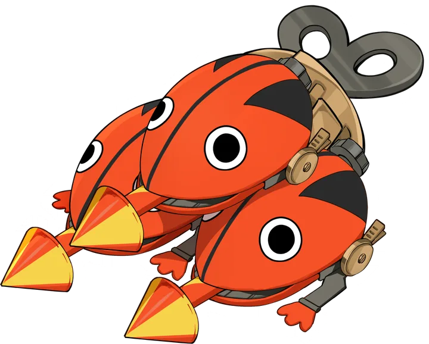

怪物官方原文 ↗三联爆竹呱三联合体的爆竹呱呱！燃放爆竹的时候请万分小心！编号1054地图水乡古镇 <!--数值（攻击 / 防御 / 生命）难度攻击防御生命星币极限221612技能主动技能｜大烟花不安全燃放（冷却 1）：指定5格内生命值最高的一个角色，对目标及附近2格内的所有角色造成自身攻击力的伤害。被动技能｜未燃放爆竹：被击倒后，击倒者获得1张高升炮。机制1. 不会主动攻击。 2. 无法反击。机制标签不攻击,不反击,使用技能,技能伤害相关内容星趴怪物图鉴图鉴水乡古镇地图Z3000角色高升炮卡牌/手牌